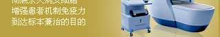

Infection, sneaking up on your epididymis from these ways...
1. Epididymitis is secondary to prostatitis or urinary tract infection.
2. Prostatectomy, especially infection after transurethral surgery.
3. Sterile urine refluxes into the ejaculatory duct, leading to chemical epididymitis.
4. Extruded by external force, or excessive masturbation, frequent sex life, etc.
5. Other external reasons, such as local high temperature caused by underwear wrapping, etc.
1. Sudden pain in the scrotum
2. Swelling of the epididymis
3. Induration of epididymis and dull pain
4. The scrotum is swollen and painful
5. Sudden thickening of the spermatic cord
Does one of the above symptoms must be epididymitis? >>Click to consult
decreased ability to fertilize
Epididymal duct blockage
affect sperm output
lead to infertility
prone to chills
Phenomena such as high fever
Decreased human immunity
lower immunity
lower immunity
hardened epididymis
severe pain
lead to infertility
Is the occurrence of one of the above symptoms necessarily epididymitis? >>Click to consult
In order to help the majority of patients with epididymitis get rid of the disease, our hospital took the lead in introducing photodynamic therapy system. This system breaks through the shortcomings of traditional diagnosis and treatment, adopts a three-dimensional treatment method, directly hits the focus, and achieves the ultimate goal of complete sterilization and recurrent attacks. So far, thousands of patients have been freed from orchitis and epididymitis.>> consult more
pain symptoms disappear completely
The swelling of the epididymis obviously disappeared
pain symptoms disappear completely
95.77% of patients were successfully cured
We not only have advanced technology for treating epididymitis, but also have experts in the field of andrology authority with more than ten years of clinical experience and more than 10,000 successful operations, which has won the affirmation and trust of the majority of patients.